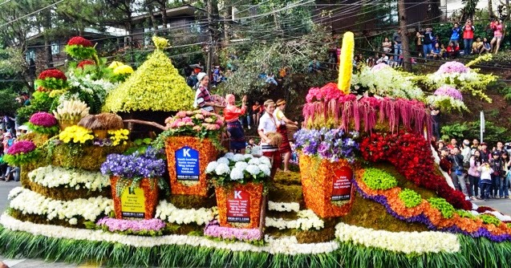

Baguio City is a highly urbanized city located on the Northern Luzon island. It is called " City of Pines" and " The summer capital of the Philippines", It is popular in summer due to cooler weather.
Folks say the city got its name from"Bag-iw" a mossy flowering plant that grew in these parts the American colonizers pronounced as "Bág-ee-yow"
Festival
Also known as Flower Festival. The origin of the term "panagbenga" came from the kankanaey meaning "season of blooming." This festival is held during the month of February and as a tribute to the city's flowers and as a way to rise up from the devastation of the 1990 earthquake. The festival also includes street dancing, presented by dancers clad in flower-inspired costumes, that is inspired by the Bendian, an Ibaloi dance of celebration that came from the Cordillera region.
History
The area now known as Baguio City was first called Kafagway and occupied by the Kankaney and Ibaloi tribes of the Cordilleras. Spanish Occupation. During their occupation of the Philippines, the Spanish colonizers conducted a series of expeditions, led by Juan Salcedo in 1572 and Don Q. M. Quirante in 1694 to the cool mountains of Benguet.
To go places and do things that have never been done before – that’s what living is all about.Facts
Baguio, on the Philippines’ Luzon island, is a mountain town of universities and resorts. Called the “City of Pines,” it’s particularly popular in summer due to unusually cooler weather. At its center is Burnham Park, with gardens and a lake. Nearby, Baguio Cathedral, completed in 1936, has a rose-hued exterior. The main thoroughfare is Session Road, lined with shops, restaurants and entertainment.
Photographs by Jerome.